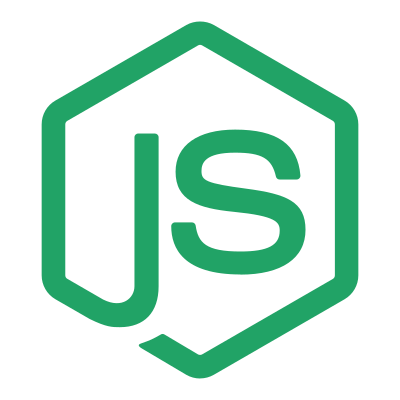
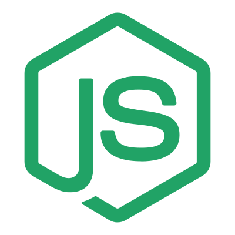

Programming Languagues


 



Subjects
DEV1001 Introduction to Web Development
This subject introduces students to the fundamentals of web development. Students will learn the fundamentals of how the Internet works, as well as the basics of coding for the Web using industry-relevant programming languages, markup and scripting languages, and professional quality tools and practices.
ISK1001 Industry Skills I
This subject focuses on technical and non-technical skills that are desirable across many roles within the web development industry. Students will focus on implementing version control, software testing, documentation and communication in a professional environment.
DEV1002 Database and Servers
This subject introduces students to relational and document databases and to the concept of web servers. Students will learn the differences between document and relational databases and how to apply the appropriate query language to achieve database objectives. Students will also learn how to configure a web server.
DEV1003 Advanced Applications
This subject builds on competencies developed in Introduction to Web Development and Databases & Servers, further developing students’ knowledge and skills in applying industry-standard programming languages and tools. This is extended with application to web development frameworks and client/server architecture for the development of full-stack web applications, and using basic industry-standard techniques to ensure the security of the front and back ends of the web applications. Students will also learn the fundamentals of testing and debugging for web development.
ISK1002 Indstry Skills II
This subject builds on competencies developed in Industry Skills I, as well as introducing a new focus on algorithmic and problem-solving skills. Students will dive deeper into the implementation of version control, software testing, documentation and communication in a professional environment, learn and practice problem-solving strategies, and establish plans for networking in a professional context.
DEV1004 Dev Ops
This subject introduces students to the role and practices of a DevOps (Developer Operations) professional. Students will learn what DevOps means and how DevOps impacts an organisation. They will understand and construct professional cloud architecture patterns, secure them with basic industry-standard techniques, and implement continuous integration/continuous delivery (CI/CD) pipelines to facilitate automated code deployment.